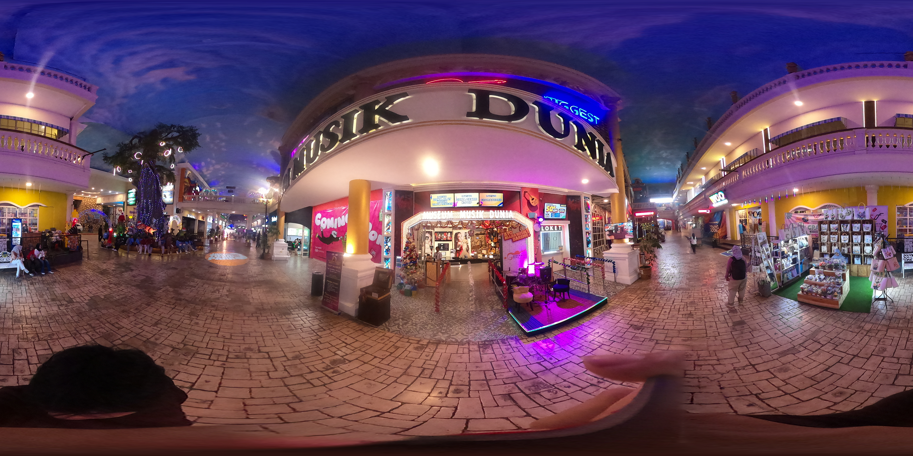

Pintu Masuk Utama Lantai 1 (GS__2316.JPG), titik awal rute berantai 3 lantai
Museum Musik Dunia 360°
Telusuri galeri 3 lantai Museum Musik Dunia di Jawa Timur Park 3 secara berurutan dari gerbang masuk Lantai 1 (instrumen 5 benua, Pipe Organ 1899, Drum Set Terry Bozzio, dan Gamelan Nusantara), naik ke Lantai 2 (Keroncong Kampung Tugu, musisi Indonesia, Elvis Presley, The Beatles, dan Jazz Stage), hingga ruang konser Grand Piano dan kotak musik antik di Lantai 3.
- Lantai 1
- 12 titik, 21 koleksi
- Lantai 2
- 10 titik, 18 koleksi
- Lantai 3
- 3 titik, 4 koleksi
Terima Kasih Telah Berkunjung
Kunjungan virtual 360° di Museum Musik Dunia telah selesai. Anda dapat memilih lantai lain untuk meninjau koleksi tertentu atau kembali ke layar pembuka.